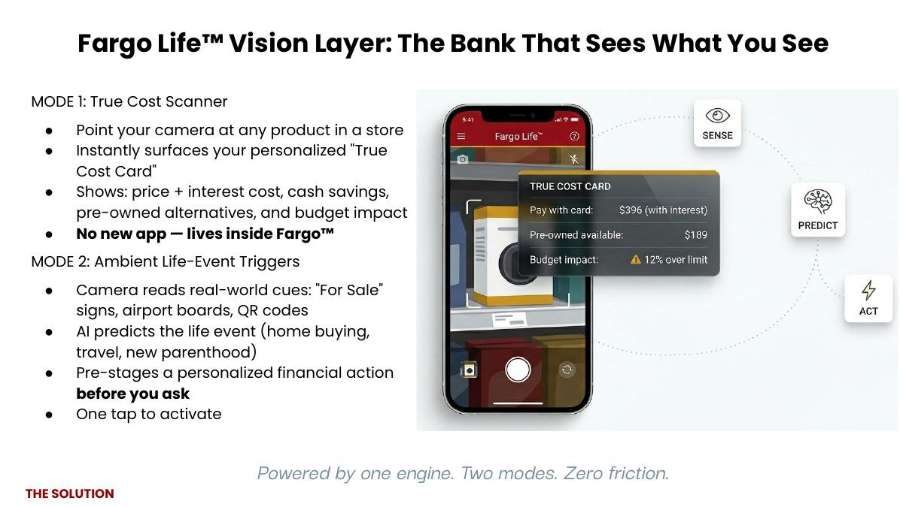
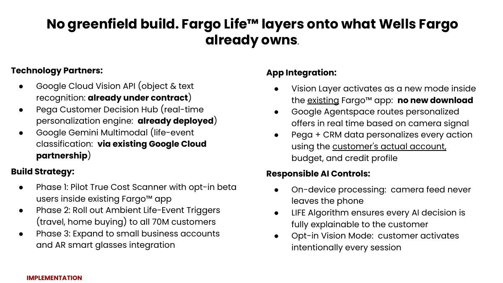
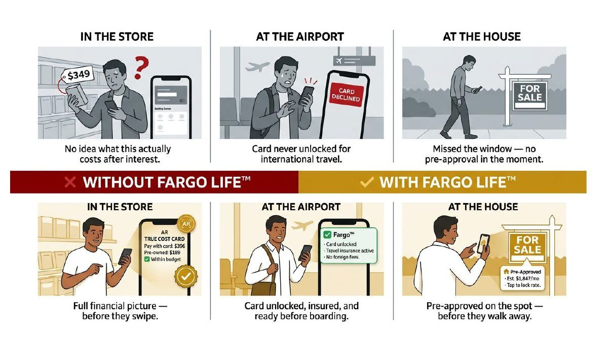

About this projectThis was my submission to the Wells Fargo × Global Career Accelerator Early Talent Competition. It isn't affiliated with or endorsed by Wells Fargo, and nothing here has been built.
The problem
Banks respond well after the fact: a fraud text, a follow-up offer. At the moment of decision, in the aisle or at the open house, they're silent. The pitch built its case on figures it cited: about $282 a month spent on impulse purchases, 28% of Americans naming impulse buying as their top financial regret, and 35% putting their last impulse buy on a credit card.
The concept
One engine, two modes, following a Sense → Predict → Act loop:
- True Cost Scanner: point the camera at a product and see a personalized card with the price plus interest if it's charged, pre-owned alternatives and the budget impact, before paying.
- Ambient life-event triggers: real-world cues like a "For Sale" sign or an airport board prompt a ready-to-go action (a mortgage pre-qualification or travel settings), activated with one tap.


Implementation plan and recommendations
- Phased build: pilot the scanner with opt-in beta users, then roll out travel and home-buying triggers, then expand to small-business accounts.
- Reuse, not a new app: the plan proposes building on technology partnerships the bank has announced instead of a new download.
- Responsible AI from the start: on-device processing so the camera feed stays on the phone, opt-in every session, and an explanation for every suggestion.
- Mission fit: tied to the bank's stated mission to help customers succeed financially, and to financial inclusion: a "personal CFO" experience for everyone, not only wealthy clients.

Limitations
- A concept pitch: the impact described is the intended outcome, not a measured result.
- The plan's assumptions about the bank's existing systems come from public information and would need validation with the bank.